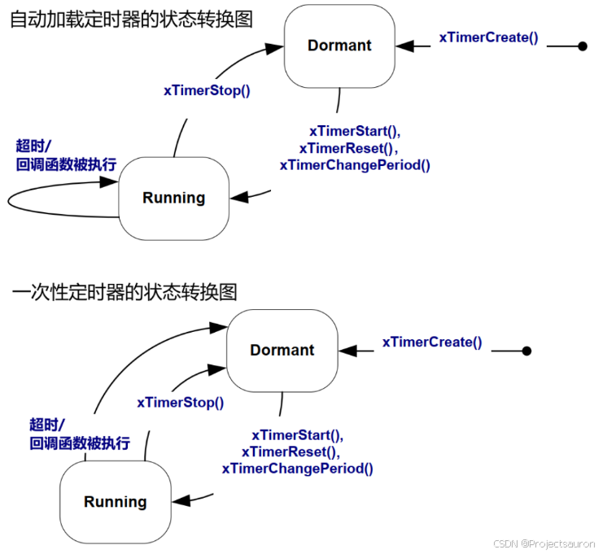

FreeRTOS 快速入门（九）之软件定时器
@toc
一、软件定时器的特性
使用定时器跟使用手机闹钟是类似的：
- 指定时间：启动定时器和运行回调函数，两者的间隔被称为定时器的周期（period）。
- 指定类型，定时器有两种类型：
- 一次性（One-shot timers）：
这类定时器启动后，它的回调函数只会被调用一次；
可以手工再次启动它，但是不会自动启动它。 - 自动加载定时器（Auto-reload timers）：
这类定时器启动后，时间到之后它会自动启动它；
这使得回调函数被周期性地调用。
- 一次性（One-shot timers）：
- 指定要做什么事，就是指定回调函数
实际的闹钟分为：有效、无效两类。软件定时器也是类似的，它由两种状态：
- 运行（Running、Active）：运行态的定时器，当指定时间到达之后，它的回调函数会被调用
- 冬眠（Dormant）：冬眠态的定时器还可以通过句柄来访问它，但是它不再运行，它的回调函数不会被调用
定时器运行情况示例如下：
- Timer1：它是一次性的定时器，在 t1 启动，周期是 6 个Tick。经过 6 个 tick 后，在 t7 执行回调函数。它的回调函数只会被执行一次，然后该定时器进入冬眠状态。
- Timer2：它是自动加载的定时器，在 t1 启动，周期是 5 个 Tick。每经过 5 个 tick 它的回调函数都被执行，比如在 t6、t11、t16 都会执行。

在 FreeRTOS 的配置上，如果要是用定时器就需要配置下面几个宏定义：
1 | //打开定时器 |
二、软件定时器的上下文
1、守护任务
FreeRTOS 中有一个 Tick 中断，软件定时器基于 Tick 来运行。但是，在哪里执行定时器函数呢？FreeRTOS 是 RTOS，它不允许在内核、在中断中执行不确定的代码：如果定时器函数很耗时，会影响整个系统。
所以，在 FreeRTOS 中，不在 Tick 中断中执行定时器函数，而在某个任务里执行，这个任务就是：RTOS Damemon Task，RTOS 守护任务。以前被称为”Timer server”，但是这个任务要做并不仅仅是定时器相关，所以改名为：RTOS Damemon Task。
当 FreeRTOS 的配置项 configUSE_TIMERS 被设置为 1 时，在启动调度器时，会自动创建 RTOS Damemon Task。
我们自己编写的任务函数要使用定时器时，是通过”定时器命令队列”（timer command queue）和守护任务交互，如下图所示：
守护任务的优先级为：configTIMER_TASK_PRIORITY；定时器命令队列的长度为 configTIMER_QUEUE_LENGTH。
2、守护任务的调度
守护任务的调度，跟普通的任务并无差别。当守护任务是当前优先级最高的就绪态任务时，它就可以运行。它的工作有两类：
- 处理命令：从命令队列里取出命令、处理
- 执行定时器的回调函数
能否及时处理定时器的命令、能否及时执行定时器的回调函数，严重依赖于守护任务的优先级。
3、回调函数
定时器的回调函数的原型如下：
1 | void ATimerCallback( TimerHandle_t xTimer ); |
定时器的回调函数是在守护任务中被调用的，守护任务不是专为某个定时器服务的，它还要处理其他定时器。
所以，定时器的回调函数不要影响其他人：
- 回调函数要尽快实行，不能进入阻塞状态
- 不要调用会导致阻塞的API函数，比如
vTaskDelay() - 可以调用
xQueueReceive()之类的函数，但是超时时间要设为 0：即刻返回，不可阻塞
4、软件定时器定时器的控制块
1 | typedef struct tmrTimerControl /* The old naming convention is used to prevent breaking kernel aware debuggers. */ |
定时器控制块中一共含有7个变量，其作用解析如下：
const char * pcTimerName：记录定时器名字ListItem_t xTimerListItem：定时器的列表项，用于插入定时器列表；TickType_t xTimerPeriodInTicks：定时器的周期，单位为系统节拍周期，即 tick；void * pvTimerID：定时器的 ID，整数形式。该 ID 是当一个回调函数分配给一个或多个定时器时，可以根据 ID 不同处理回调函数中不同程序；TimerCallbackFunction_t pxCallbackFunction：定时器回调函数；UBaseType_t uxTimerNumber：跟踪工具分配的 ID，如 FreeRTOS+Trace；uint8_t ucStatus：保存计时器是否静态分配，以及它是否处于活动状态；
在定义完成控制块后，代码中会使用 typedef xTIMER Timer_t 重定义控制块的变量别名，在后续代码及开发中可以使用别名完成程序开发。
三、软件定时器的函数

1、创建
要使用定时器，需要先创建它，得到它的句柄。
有两种方法创建定时器：动态分配内存、静态分配内存。函数原型如下：
1 | /** 使用动态分配内存的方法创建定时器 |
回调函数的类型是：
1 | void ATimerCallback( TimerHandle_t xTimer ); |
2、删除
动态分配的定时器，不再需要时可以删除掉以回收内存。删除函数原型如下：
1 | /* 删除定时器 |
定时器的很多 API 函数，都是通过发送”命令”到命令队列，由守护任务来实现。
如果队列满了，”命令”就无法即刻写入队列。我们可以指定一个超时时间 xTicksToWait，等待一会。
3、启动/停止
启动定时器就是设置它的状态为运行态（Running、Active）。
停止定时器就是设置它的状态为冬眠（Dormant），让它不能运行。
涉及的函数原型如下：
1 | /** 启动定时器 |
注意，这些函数的 xTicksToWait 表示的是，把命令写入命令队列的超时时间。命令队列可能已经满了，无法马上把命令写入队列里，可以等待一会。
xTicksToWait 不是定时器本身的超时时间，不是定时器本身的”周期”。
创建定时器时，设置了它的周期（period）。xTimerStart() 函数是用来启动定时器。假设调用 xTimerStart() 的时刻是 tX，定时器的周期是 n，那么在 tX+n 时刻定时器的回调函数被调用。如果定时器已经被启动，但是它的函数尚未被执行，再次执行 xTimerStart() 函数相当于执行 xTimerReset()，重新设定它的启动时间。
4、复位
从定时器的状态转换图可以知道，使用 xTimerReset() 函数可以让定时器的状态从冬眠态转换为运行态，相当于使用 xTimerStart() 函数。
如果定时器已经处于运行态，使用 xTimerReset() 函数就相当于重新确定超时时间。假设调用 xTimerReset() 的时刻是 tX，定时器的周期是 n，那么 tX+n 就是重新确定的超时时间。
复位函数的原型如下：
1 | /** 复位定时器 |
5、修改周期
从定时器的状态转换图可以知道，使用 xTimerChangePeriod() 函数，处理能修改它的周期外，还可以让定时器的状态从冬眠态转换为运行态。
修改定时器的周期时，会使用新的周期重新计算它的超时时间。假设调用 xTimerChangePeriod() 函数的时间 tX，新的周期是 n，则 tX+n 就是新的超时时间。
相关函数的原型如下：
1 | /** 修改定时器的周期 |
6、定时器ID
定时器的结构体如下，里面有一项 pvTimerID，它就是定时器ID：

怎么使用定时器ID，完全由程序来决定：
- 可以用来标记定时器，表示自己是什么定时器
- 可以用来保存参数，给回调函数使用
它的初始值在创建定时器时由 xTimerCreate() 这类函数传入，后续可以使用这些函数来操作：
- 更新ID：使用
vTimerSetTimerID()函数 - 查询ID：查询
pvTimerGetTimerID()函数
这两个函数不涉及命令队列，它们是直接操作定时器结构体。函数原型如下：
1 | /** 获得定时器的ID |